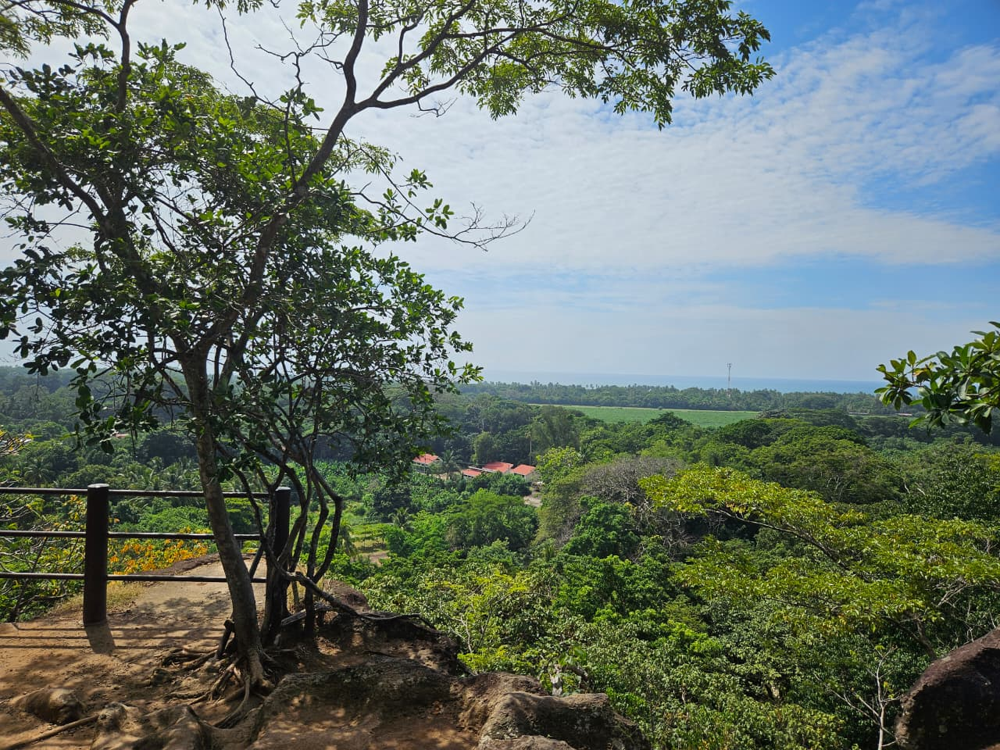
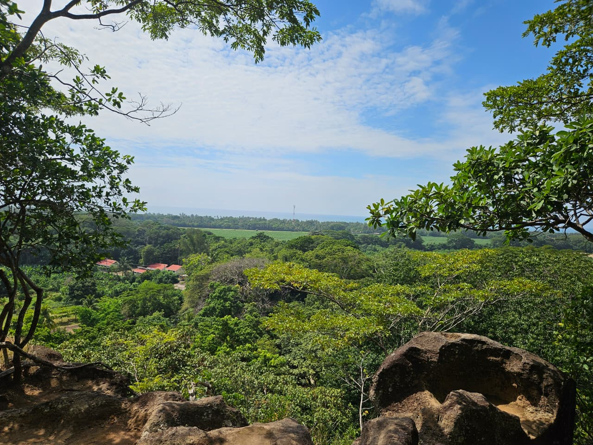
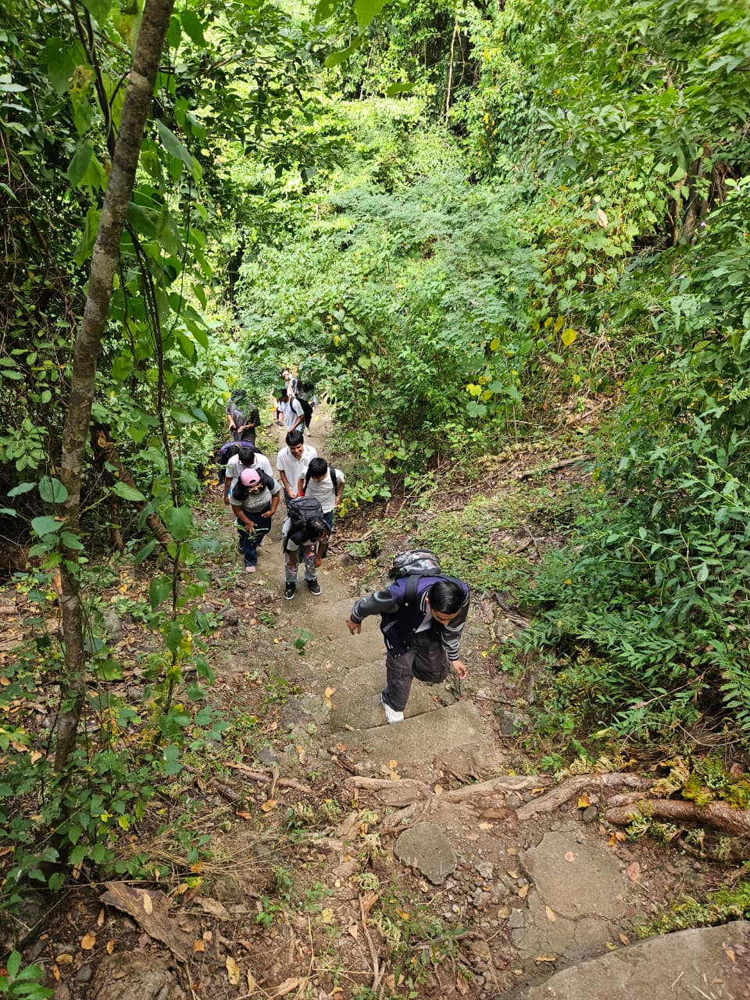
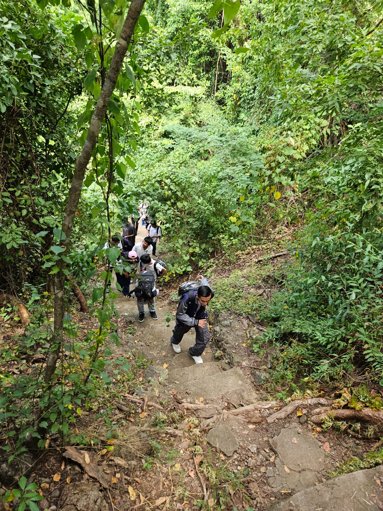

Ecoparque Walter Thilo Deininger
Reportaje multimedial de integración de insumos audiovisuales en áreas naturales protegidas procesados mediante herramientas de Inteligencia Artificial.
Valor Ecológico
Reserva natural que alberga el 7% de la vegetación total del país. Protege tres tipos de bosque: seco caducifolio, de galería y secundario.
Ubicación Estratégica
Cantón Hacienda San Diego, Km. 55, Carretera Litoral, La Libertad. Se encuentra ubicado a tan solo 39 km de San Salvador.
Legado Histórico
Donación efectuada por el filántropo Walter Thilo Deininger para asegurar la preservación biológica y el estudio de fauna y flora autócotona.
Galería Fotográfica de Campo
Registros fotográficos recolectados durante la caminata por los senderos y puntos panorámicos.

Ascenso en Senderos
Captura del recorrido por las escalinatas de piedra rodeadas de vegetación caducifolio.

Camino a la Aventura
Documentación de la exigencia física y trabajo en equipo durante la caminata guiada.

Vista Panorámica
Contraste entre el follaje de la reserva y la línea costera del Océano Pacífico.

Horizonte y Follaje
Perspectiva del dosel forestal resguardado por las 1,047 manzanas del santuario.
Registro Audiovisual (Clips de Campo)
Clips de video dinámicos de la interacción del grupo y docentes durante el recorrido.
Recorrido por el Bosque
Ingreso a los senderos y primera estación de caminata grupal.
Interacción y Entrevista
Entrevista y comentarios del grupo sobre la experiencia de la visita.
Toma de Acción en Campo
Registro dinámico de la caminata bajo la sombra del dosel natural.
Aplicación de Herramientas de Inteligencia Artificial (Post-Visita)
Durante las horas de módulo de trabajo post-visita, se aplicaron las siguientes técnicas de IA y software multimedia:
Redacción Asistida
Sintetización de datos científicos de flora/fauna y corrección de estilo para la maquetación del reportaje.
Mejora de Imagen
Escalado e iluminación asistida para fotografías tomadas en zonas con baja exposición solar.
Curaduría Multimedia
Clasificación inteligente de clips audiovisuales y estructuración para formato web interactivo.
Asignación de Roles del Equipo (6 Integrantes)
| Integrante | Rol en Campo | Responsabilidad en Postproducción (IA & Edición) |
|---|---|---|
| Daniel Benjamin Cortez Beltran | Fotógrafo de Vistas Panorámicas | Optimización y corrección de luz en fotos del mirador (97787.jpg y 97783.jpg) |
| Jonathan Eduardo Escobar Vásquez | Fotógrafo de Senderos | Procesamiento y encuadre digital de imágenes de senderismo (97791.jpg y 97795.jpg) |
| Jefferson Alberto Hernández Vásquez | Camarógrafo y Registro de Video | Curaduría y corte dinámico de fragmentos audiovisuales (97816.mp4, 97815.mp4, 97814.mp4) |
| Josseline Esmeralda Linares Rochez | Recopilador de Datos Teóricos | Generación asistida con IA del marco de biodiversidad y legado de Walter Thilo Deininger |
| Marcos Neftaly Vásquez Martínez | Entrevistador de Campo | Sintetización de datos y redacción de notas informativas |
| Alondra Melissa Yanes Turcios | Coordinador de Logística | Maquetación web/PDF interactivo y ensamblaje general del trabajo grupal |